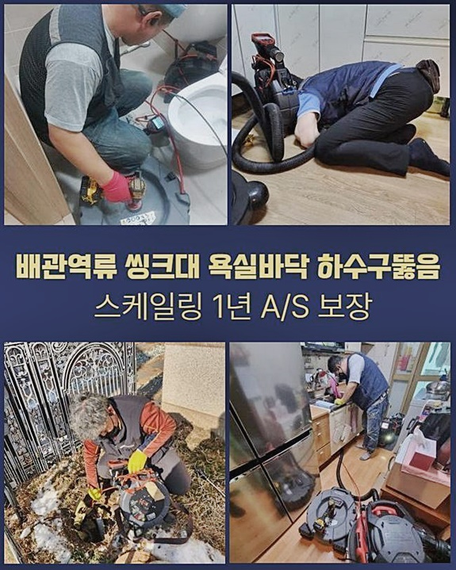
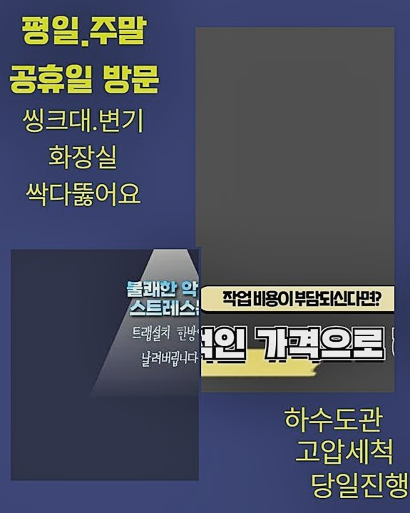
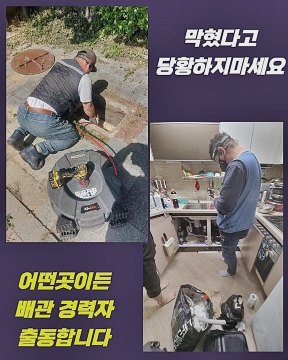
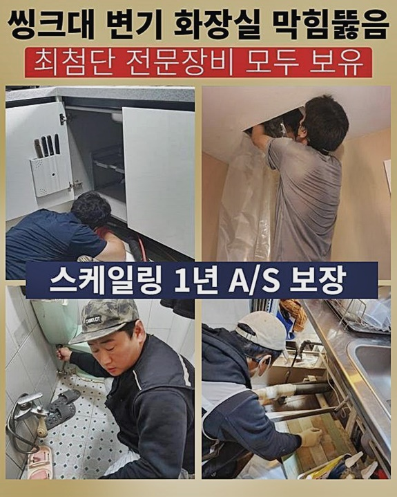
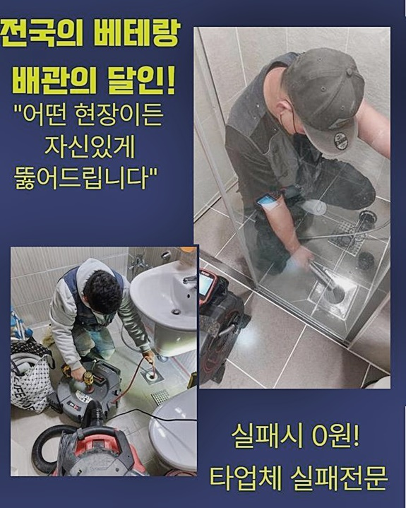
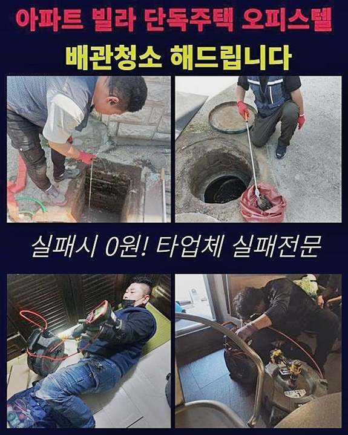

🏠 부천 소사본동씽크대뚫음 괴안동 냄새차단 출장수리
용인시 처인구 배관막힘 전문 시공 후기

📋 작업 개요
- 위치: 용인시 처인구, 수원시 영통구, 화성시 동탄
- 서비스 유형: 배관막힘, 누수수리, 고압세척, 내시경점검
- 작업 일시:
- 업체명: 하수구수사대 (010-5615-2118)
🔍 문제 상황
부천 소사본동씽크대뚫음 괴안동 냄새차단 출장수리
세대 안에서 배수관이 제 역할을 못하는 동기를 알아보면 개수대에서 역류증상이 일어나기도 하며 욕실에서 물 사용하는 것이 원활하게 이행되지 않아 어려움을 겪는 예도 꽤 많죠
그러한 일들은 물에 녹지않는 단단한 잔재가 빠져버렸거나 혹은 머리털을 포함해서 음식찌꺼기와 같은 물질들이 계속해서 유입되어 표출될 가망도 크나 건축하는 과정에서의 결점 때문에 일어나는 지점도 무시하지 못할 수준입니다
이날은 주상복합건물에서 일찌감치 배관공사를 실행하던 가운데 다급한 방문 요청이 들어왔습니다
집 안의 다양한 공간에서 물이 안내려가고 역류증세가 이곳저곳에서 동시에 발현된다면 통지를 들은 뒤 마침 뒤의 일정이 비어 있었기에 바로 이동하게 되었네요
세대 내부에 매립된 하수관에서 발발한 고장이 아니고 공동 하수관 문제는 고압 물청소를 활용한 이물질 분리가 경제적인 방책이라고 할 수 있어요
그리하여 이러한 건물을 알맞게 소제하는데 마땅한 세척기계를 갖춘 다음에 도달하게 되었어요
저희들처럼 고가의 기계들을 보유하지 않은 기술자들은 고객님의 댁에 방문하여 서투르게 업무가 이행될 소지가 많고 결과물이 잘 나오지 않을 여지도 크죠
흡입기를 가동하거나 배관 전용 파쇄공구로만 고장을 처리하려고 생각한다면 세대 내부에서 나온 배관들과는 판이하게 파이프의 크기가 커서 뚫음이 쉽지 않게 되죠

🔎 원인 분석
💡 전문가 진단: 정밀 진단 장비를 사용하여 슬러지의 고착 여부를 판명하고 타격/세척 작업을 실시했습니다.
표출되는 부분에 대한 잔재들만 처치해버린다면 당분간 배수길이 나타날 수는 있겠으나 시간의 흐름에 의해 물막힘이 나타나서 갑갑해지기에 이런 내용을 처치하려고 수리공을 구할 땐 다양한 장비들을 소지한 데다가 문의할 것을 강력히 권장해 드려요
의뢰인이 있는 곳에 다다른 뒤에는 시거에 공용배관실을 개문하고 메인 배관에 어떠한 문제가 일어난 것인지 따져보기로 마음먹었죠
적층된 이물들에 근거한 형태일 수 있지만 시멘트 조각들이 배관을 막아서 순간적으로 발현된 모양새일 가능성도 있기에 다양한 변수를 고려해야 하였답니다
섬세하게 배수관의 상태를 판단하려면 내시경 방수카메라가 필수적입니다
저희팀은 이러한 사태에 대한 지식이 충분하므로 이런 배관시스템에서 발발할 수 있는 문제점들을 탐색할 수 있는 첨단 설비들과 여러가지 상황속에서 증험한 능력이 충분하여 이유가 무엇인지 상관없이 재빠르게 분석해서 해결점을 마련하도록 모든 장비를 갖추고 출동하여 사태를 잠재워드리고 있답니다
막힘이 심한 데는 어느 처소인지 섬세하게 내시경으로 관측하며 시공을 속행했어요
카메라 화면을 통하여 지켜보니 공동배수관의 안은 다양한 침전물들과 이물들로 길목이 차단된 상태라 물의 이동이 안되고 있었답니다
세안이나 샤워를 할 때 활용하는 계면활성제 베이스의 소모품과 같은 물품에 함입된 성분들과 머리뭉치 그것에 더하여 음식물을 버릴 때 발생한 여러 쓰레기를 포함하여 수천 가지의 성분들이 덩어리가 되어 쌓이면 차후 벽고철과 같이 강력한 백회덩어리 등으로 바뀔 수가 있어요
해당 물질을 곧바로 세정하지 않은 상태로 내버려 둔다면 점점 크기가 커지게 되고 물흐름을 방해하여 공용 하수도에 말썽이 생기게 되는거죠

🔧 작업 과정
2주 전에 출장갔던 건축물에선 반려묘가 대소변 처리를 하는 모래 가루를 중간 층에서 배관으로 버리는 일로 흡사한 막힘이 발발하기도 했으며 사태는 현장의 성격에 따라 차이가 나죠
누적이 심화된 처소의 관을 분리시킨 다음에 세척을 실시하면 안에 고여있던 액체와 노폐물이 외부로 튀어나가게 마련이라 근처가 더러워질 가능성이 커서 보양지 등으로 먼저 보호해둘 필요가 있어요
주변 보존을 섬세하게 처리하고 고착화된 배관 안의 잔재들을 소멸시킬 예비활동을 마쳤답니다
관 자체가 긴 축에 속하여 센터에서도 세정이 불가결했기에 관탐지 기계로 어느 위치까지 작업을 이행하여야 할지 결정하는 시간을 가졌습니다
찾아낸 장소도 섬세히 커버링을 속행해서 혹여 부근으로 침전물이 흩어지는 상황을 방비했답니다
부분적으로 절삭작업을 해서 세정 업무를 이행할 수 있는 면적을 만들었답니다
처음 부위에서부터 중반에 이르기까지 양방향에서 세정하는 업무를 실시하여 내부에 단단해진 슬러지 뭉텅이들을 없애나갔어요
물청소 업무중에는 관벽에 눌어붙었던 이물들이 점차 와해되어 가는 게 목도되었는데요
해당 장비는 강한 동력으로 말미암아 짧은 시간에 높은 효율을 나타내어 내측에 잔류하는 노폐물들을 사라지게 만드는 건 수월하였답니다
단번에 전체적인 하수관 덩어리들을 처리하는 것은 힘겨우니 부위를 나눈 다음 센터에서 내시경cctv를 통해 노폐물들이 집중된 장소를 주의깊게 들여다 본 다음 수압을 점차적으로 높이고 청결히 변화시켰어요
심각하게 굳어진 잔재들은 전문가용 화학제품을 쓰는 현장들도 있긴 하지만 본 작업장은 그 업무까지 이행할 필요성은 없었어요
소쇄를 마감한 뒤 되처 내시경카메라로 정결히 배수관 청소 임무가 실시되었는지 조사했고 일시에 물을 흘려보내는 검열 또한 시행했습니다
저희들이 처치한 지점에선 도처에서 누수 때가 목도되었는데 유독 상부 벽면에 얼룩덜룩한 곰팡이가 잠입한 흔적이 보였답니다
대체적인 구조물을 분석해보니 세대 내부로 이어지는 관이 노후화되어 찢겨 있어서 신제품으로 바꿀 사태에 직면하였지만 구조물 전반적인 배수관막힘이 발발하여서 시공 업무가 많았기에 해당 사태를 잠재우는데 다량의 에너지가 사용되었고 늦은 시간이 되어서 차후 업무는 이튿날 찾아가 손보기로 예약한 다음 귀가하였어요


✅ 작업 완료
금번 장소는 건물 관리팀을 통해 중층 이하 세대원들이 일시적으로 물막힘이 생겼다는 항의를 받아서 꽤 이른시기에 심각성을 인지하고 저희에게 의뢰를 주셨기 때문에 쉬이 해결을 보실 수 있었지요
동기 파악이 난해한 물막힘 증세나 역류증세로 인해 일상 생활에 지장이 초래된다면 저희에게 전화해서 처리해보실 것을 권해드려요
저희는 신속한 방문이 일상화되어 있고 신용을 가지고 운영하고 있으므로 편안하게 전화하셔도 됩니다
주저하지말고 의뢰해 주신다면 전력으로 일하여 흡족한 성과로 답해드리도록 하겠습니다



⚠️ 하수구 배관 막힘 예방 및 관리 가이드
- ✅ 머리카락, 비닐, 물티슈 등 물에 분해되지 않는 이물질은 절대 흘려보내지 마세요.
- ✅ 기름기 많은 식기는 설거지 전 키친타올로 먼저 기름때를 닦아내세요.
- ✅ 주기적으로 배수구에 뜨거운 물을 가득 부어주어 유지방 고착을 방지하세요.
- ✅ 작업 후 1년 이내 재발 시 무상 A/S 보증 서비스를 제공합니다.
💡 핵심 정리
- 확실한 장비 작업(내시경 점검 및 샤프트 스케일링)으로 원인을 뿌리 뽑습니다.
- 작업 후 1년 이내에 동일한 부위 재발 시 100% 무상 A/S 서비스를 보장합니다.
- 서울 · 경기 · 인천 전 지역에 24시간 언제든 긴급 출동할 수 있도록 항시 대기 중입니다.
❓ 자주 묻는 질문 (FAQ)
🚨 용인시 처인구 배관막힘 문제로 고민이신가요?
정확한 원인 진단과 확실한 시공으로 재발 없는 해결을 약속드립니다.
24시간 긴급 출동 | 서울 · 경기 · 인천 전지역 | 1년 내 재발 시 무상 A/S